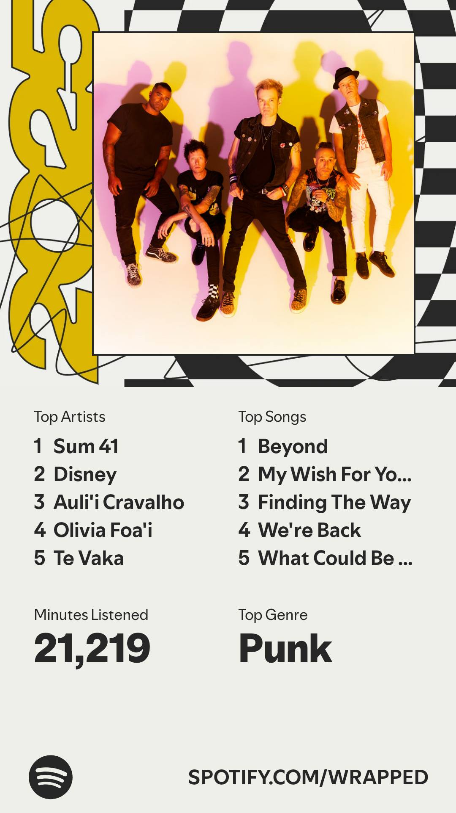

Chapter 1
What Is Management Information Systems?
Anchor case: Spotify Wrapped
Every December, a music app produces a slideshow about you: your top artist, your minutes, your “listening personality”. Within hours it is everywhere, posted voluntarily by hundreds of millions of people.
By the end of this chapter you should be able to:
- Name the five components of an information system and find each one inside a system you use every day.
- Explain why MIS is the business management of technology rather than a technology skill, and how it differs from business analytics.
- Apply the weakest component rule: identify which component a failure lives in before assigning blame.
- Read a system as a loop of dependencies rather than a pile of parts, which this book calls systems thinking.
- Describe what a technology ethnographer does inside an organization, and why that is the job this degree prepares you for.
01Why a music app opens a business course

It is tempting to treat Spotify Wrapped as marketing. The campaign is real, and it works. But it only exists because of what sits underneath it: an information system, and that is the part worth your attention.
Somebody had to capture a year of listening play by play. Store it so that any one listener could be found again. Reduce hundreds of millions of listening years down to the few facts worth telling each person. And deliver all of it on the same morning without the whole system failing. Nobody writes 1.4 billion stories by hand. No creative team, no agency, no amount of budget.
Every information system is built from the same five parts: hardware, software, data, networks, and people. This chapter uses Spotify Wrapped to show you all five, because you have seen what it produces and never once seen the thing that produces it, which is true of nearly every system you will meet. Some of what you find is technical. Most of what decided whether it worked was managerial: what somebody chose to build, what they were willing to spend, and who was made responsible for checking it. By the end you will be able to name the five parts in any system, and say which one is about to cause trouble.
02So, what is MIS?
You signed up for a class called Principles of Management Information Systems, and you may not be entirely sure what you signed up for. Fair enough. Let us start by clearing away the most common wrong answer.
MIS does not mean Excel. Most students walk in thinking it does, and the mistake is an understandable one. MIS is the “technology major” in a business school, so for years the MIS classes have been where everyone goes to learn Excel. Being the place a skill gets taught is not the same as being the skill.
You will do a month of Excel in this course, and you should, because you will use it for the rest of your career. So will the accountants, the finance majors, the marketers, and everyone going into operations. Working with data is a basic expectation in business now, not a specialization, roughly where writing a professional email sits.
Which raises a fair question, since this college also offers business analytics: what is the difference between MIS and Business Analytics? Roughly this. Analytics asks what the data says. MIS asks where the data came from, whether the system that produced it can be trusted, whether the organization will actually act on the answer, and what happens when one piece of it breaks. The two overlap constantly and you will use both. But the analyst is handed a dataset. You are going to spend this quarter asking who built the system that handed the data over, what it was built to do, and where it can break.
So if the spreadsheet is not the subject, what is? Here is the short version, and then we will spend a quarter unpacking it.
A management information system is the combination of hardware, software, data, networks, and people that an organization uses to collect information and act on it. The definition’s point is the word combination: none of the five components is a system by itself, and a failure in any one component is a failure of the whole system. This course will encourage you to think about technology in terms of all five at once.
Managing one of these systems means understanding all five of its parts: the hardware it runs on, the software that tells the hardware what to do, the data it captures, the networks that move that data around, and the people who use it.
Notice which word comes first in the name of the field. It is not information systems, it is management information systems, and the management is not a decoration on the front of the phrase. Somebody has to decide what a system is for, what it is worth spending, who is accountable for it, and whether the organization is going to change how it works to accommodate it. Those are management decisions, made by people who are not writing the code, and they determine the outcome more often than the technology does. This is the business management of technology, which is why the major sits in a college of business.
People are not the last item on that list by accident, and they are not there as a courtesy. A system with no people in it is not a system, it is equipment. People have to want the answer, people have to act on it, and people have to notice when it is wrong. Every failure you will read about this quarter had working equipment in it somewhere. None of that makes people the component that matters most: the weakest component rule applies to all five equally, and people break systems about as reliably as hardware does.
Four of those five are technology. Hardware, software, data, networks: you can buy them, install them, point at them, and put a number on what they cost. The fifth is not technology, and the fifth is why this class lives in a business school rather than only in a computer science department. Technology nobody adopts goes nowhere. A system nobody trusts gets worked around. A report nobody reads changes no decision at all.
Here is the job, in one picture. An MIS graduate works the way a technology ethnographer would. You walk into an organization, watch how the people there actually use the technology they have, and write down what you see: who touches which system, what they type in, what they work around, what they never look at. Then you use what you saw to decide where technology fits into the way the business works, where it does not, and what would make the business better. The computer science graduate builds the system. You are the one who stands in the room and notices that nobody uses it the way it was designed, and works out what to do about that.
So the computer scientist asks whether the system works. You are going to ask whether it is worth building, whether the organization around it will actually use it, and whether the decisions it feeds are better than the decisions it replaced. Most of the famous technology failures you will read about were systems that worked perfectly, inside organizations that did not. Somebody has to be able to understand all of it at the same time: the data, the software, the network, the cost, and the people at both ends. That person is usually not the one who wrote the code.
The two questions have names you will use all quarter. Whether a system does its thing well, fast, cheap, with less, is efficiency. Whether it is the right thing to be doing at all is effectiveness, and effectiveness is the harder test, because a system can meet every target it measures while answering a question nobody should have asked. Most of the famous failures were efficient.
This is true of AI too, and it is worth saying plainly in a year when everyone is being told otherwise. AI is a system too, not just an LLM. The LLM is a model, and a model lives inside the software component; around it sit the other four. It needs hardware to run on, data to work from, networks to reach anyone, and people to decide what question it is answering and whether the answer is any good. Adding AI to a system does not remove the people from it. It changes what they are responsible for.
There is a name for what they become responsible for, and it is the clearest short answer to what an MIS graduate does for a living.
The simple version of what MIS actually is, and the simple explanation Prof. Califf has been giving students for 10+ years is: MIS is about translating the language of technology from human to “geek” and “geek” back to human again. He took it from a boss twenty years ago, while working as a project manager at a web design company, sitting between clients who knew what they wanted and developers who knew what was possible and translating in both directions all day. That is not a metaphor for the job. For a great many MIS graduates, that is the job.
The work of standing between the technical side of a system and the human side of it: taking what the technology produced and saying what it means for this organization, this decision, and these stakes. It requires understanding the output well enough to know when it is wrong, and being willing to say so. Translation is the clearest one-word answer to what an MIS graduate does for a living.
The educator Sam Illingworth makes the same argument about the workforce generally. He calls translation the key skill of the AI era, and notes that it draws on data literacy, ethics, contextual reasoning, and the judgment to know when to trust an output and when to overrule it. Read his list again and notice how little of it is technical. That is the job.
These days a good deal of the translating runs from human to machine and back instead. The work did not shrink when the machines got better at talking. It got larger, because more output arrives faster and fewer people are equipped to check it.
03The five components of MIS
Every information system, Spotify Wrapped, a hospital records system, the register at your coffee shop, is built from the same five components. Every case in this book gets mapped onto them. Learn to see the five and you can decompose any system you ever meet, including the ones you will be hired to fix.
| Component | What it is | In Spotify Wrapped |
|---|---|---|
| Hardware | The physical machines: phones, laptops, servers, sensors, registers. | Your phone capturing each play, and the servers warmed up before launch morning. |
| Software | The instructions the hardware runs, from the operating system on your phone to the programs Spotify runs on its servers. | The programs that sort and rank your year, and the model that writes 1.4 billion stories. |
| Data | The raw facts captured about the world: plays, sales, clicks, temperatures. | Every play, skip, and replay, timestamped and attached to your account. |
| Networks | The connections underneath everything else, moving data between machines and between organizations. Nothing above reaches anything else without them. | The trip each play makes to Spotify all year, and the trip your card makes back in December. |
| People | Everyone who builds, operates, interprets, ignores, or works around the system. | You at both ends, and the teams who decided what “remarkable” means, and who set the standard the 165,000 sampled stories were graded against. |
You do not have to answer these now. Think of them as what you would write in a notebook on your first day inside a business, one line per component. You will ask them of a real company in every chapter of this book.
- Hardware. What does it look like here: desktops, laptops, phones, tablets, registers? What does it let people do that they could not do otherwise? A tablet turns a salesperson into a traveling one.
- Software. What do the employees actually use? Is it easy to use, and useful, and to whom?
- Data. What gets captured and stored? What is missing? Who can see it?
- Networks. What has to be reliable, fast, or secure here, and what happens on the day it is not?
- People. Who uses all four of the above, and how? And who is affected by the data the system collects, whether or not they ever touch it?
A system is only as good as its weakest component. Four can be excellent and the fifth can still ruin the whole system, quietly, while the output still looks convincing. When a system fails, check all five before assigning blame. You will do exactly that on a real failure in every chapter of this book.
Reading that diagram arrows-first, seeing the five parts, the dependencies between them, and the behavior of the whole loop at once rather than any piece in isolation, is called systems thinking, and it is the closest thing this course has to a single skill. (If you take one habit away from this chapter, take that one.) Nobody at Spotify can produce a card by being excellent at one box.
The rest of this chapter is one worked example. Spotify Wrapped is a good first system to take apart because you have seen what it produces and never once seen the thing that produces it, which is true of nearly every system you will ever meet. You are about to locate all five components inside it and watch what each one had to do for the thing to arrive on your phone in December.
Next week you meet a company running the same five on coffee. By Week 4 you meet companies where a component is broken, and you practice locating which one.
Five things you would find inside a campus coffee shop. Name the component each one belongs to before you check.
When two answers seem right, ask what would break if this thing disappeared. The component is whatever the rest of the system would miss.
04Spotify Wrapped as an information system
Three numbers set the scale of what you are about to take apart:
The 2025 edition was called Wrapped Archive. Rather than just handing you your top artist, it picked up to five remarkable days out of your listening year and wrote you a short story about each one: the day you found the artist that changed everything, the day your taste changed direction sharply. In March 2026, Spotify’s engineering team published an account of how they built it. Here is the system they described.
![Spotify's high-level architecture diagram for the 2025 Wrapped Archive. A distributed data pipeline
writes a snapshot of each user's remarkable days to object storage. A publish pipeline reads those
snapshots, prepares publish payloads, and emits them to a pub/sub queue. A report generation service
consumes the published payloads and prompts a large language model, which returns the written report.
The finished report is upserted into an archive storage and serving service, backed by column-oriented
key-value storage, which a client archive UI service reads when a user requests their report. That
storage is batch-exported to an evaluation data warehouse, where evaluation and quality-assurance
systems run corpus-wide checks and signal the publish pipeline to republish faulty reports.](spotify-wrapped-architecture.png)
Read it as five components before you read it as boxes. The pipeline on the left is data. The queue in the middle is networks. The green services are software, and every one of them runs on machines somebody had to scale up hours before launch, which is hardware. Then find the LLM: one small circle at the far right edge, called by a service and handing a paragraph back. The model writes the sentence. Everything else in this picture decides what the sentence is about, whether it is true, and whether it arrives. The dashed line running back from evaluation is people: somebody decided this output had to be checked before anyone saw it.
Nothing here is only for December. This is the shape of the system that records your plays, builds your recommendations, and pays the artists, pointed at a different question once a year.
Now take that picture apart one component at a time, in the order the work actually happened: the data first, then the software that used it, the hardware it ran on, the networks that moved it, and the people behind all four.
Data: finding five days in a year of listening
Start with what “data” actually means here, because the word gets used loosely enough to mean nothing. A play event is a row. Here are five of them, roughly as the system records them.
| listener | track | artist | started at (UTC) | milliseconds played | device |
|---|---|---|---|---|---|
| u_4471 | Beyond | Auli’i Cravalho | 2025-11-04 15:07:12 | 184,300 | car speaker |
| u_4471 | Beyond | Auli’i Cravalho | 2025-11-04 15:10:19 | 184,300 | car speaker |
| u_4471 | Beyond | Auli’i Cravalho | 2025-11-04 15:13:26 | 21,880 | car speaker |
| u_4471 | Fat Lip | Sum 41 | 2025-11-04 16:41:55 | 176,120 | phone |
| u_4471 | In Too Deep | Sum 41 | 2025-11-04 16:44:52 | 208,940 | phone |
That is data: recorded facts, one row at a time, with no opinion attached. What Wrapped eventually shows you, your top artist, is information, meaning data that has been processed into something worth telling you. Chapter 2 is entirely about that difference and what it is worth.
Read the block as a whole. Three plays of the same Moana song in seven minutes on a car speaker on a Monday morning, then two Sum 41 tracks on a phone an hour and a half later. Any parent can tell you what happened: a school run, then the drive to work. The system cannot. It has one listener, u_4471, and by December it will confidently report that his top song of the year was “Beyond”. It is not wrong about the data. It is wrong about the person, and it has no way to know the difference.
Two details in that table matter later. The artist name is not in the play event. The system recorded a track ID, and the artist, album, and genre live somewhere else entirely. Getting to “your top artist was Sum 41” means matching billions of events against a separate catalog of song information. That is called a join, and you will do one by hand in Week 7. The timestamps are in one shared world clock, so each has to be converted to the listener’s own local day before anyone can say which day was biggest. Small step, easy to get wrong, and nobody would ever see it if you did.
Collecting the rows was never the problem. The problem is that a year of listening for hundreds of millions of people is far too much to hand to anything and say “find what matters.” So somebody had to decide what “remarkable” means, precisely enough that a computer could check it, and that is not a technical question. No amount of engineering skill tells you which day of someone’s year mattered to them.
The rules they settled on are called heuristics. Biggest listening day is the highest total minutes. Biggest discovery day is the day you heard the most first-time artists. Most unusual day is the day you strayed furthest from your normal taste. A fuzzy human idea, what was memorable about your year, became arithmetic a machine can run. That is translation doing its ordinary work, and it is most of what data work is. You will do a smaller version in every lab this quarter.
The data component has now done its job. Out of a year of raw rows, each listener has a handful of candidate days and the numbers that describe them. Nothing has been written yet.
Software: teaching a model to write 1.4 billion stories
So the data component hands over a shortlist of days and a pile of numbers, and software is what turns that into something a person would actually want to read. But before we get to how, a word about what software even means here.
Say “software” and most people picture the Spotify app: the green icon, the play button, the thing on your phone. That is software, and it is the smallest part of the software in this story. The app is the part with a screen on it. Behind it sits code that records every play, rules that pick the remarkable days, a pipeline that assembles a packet for each one, something that talks to the model, and a system that files the finished stories where they can be found again. None of that has a screen. Neither does most software in most companies.
The scale of the writing job is the first thing worth pausing on: around 350 million eligible listeners, up to five stories each, comes to roughly 1.4 billion reports. Every one had to be written before launch day.
Notice what the software was not asked to do. It was not asked to work out which days mattered; that was settled upstream. It was handed the answer and asked to say it well. When they sent each day to the model, they also sent a pre-computed block of statistics, because, in their words, language models are bad at math. The system was built around a known weakness of one of its own components, which is most of what good design is.
Getting the model to write well took more than three months of daily work. That is worth pausing on, because from the outside it looks like somebody asked a machine for a story and a story came out.
Then somebody had to do arithmetic. The best model available wrote lovely stories and would have cost an unthinkable amount to run 1.4 billion times, so they used it to teach a cheaper one to write the same way. Quality against cost, worked out by people, on a spreadsheet somewhere. That is not a technical decision. That is the job.
A system with no people in it is not a system. It is equipment.
Hardware: everyone at once
So: 1.4 billion stories, written and sitting there. Now every one of them has to appear on a different person’s phone, and they all have to appear on the same morning.
That is a very hard thing to ask of a set of machines. The usual answer is to let a system add capacity, meaning more computers doing the work, as demand climbs through the day. That would have failed here, because Wrapped does not climb. It spikes.
So the team switched on far more computing than they would ever normally need, hours before launch, told their suppliers what was coming, and then ran fake traffic through every region on purpose, timed to finish just before real listeners showed up. The fake traffic was there to warm everything up. In their words: when real traffic arrived, nothing was cold.
None of which is possible if you own your machines. Most of the computers in this story do not belong to Spotify. The work runs on cloud infrastructure, rented by the hour in data centers somebody else owns, which is the only reason capacity can be turned up for one morning in December and turned back down afterwards. Nobody buys and installs servers for a single morning. What that arrangement costs, and what a company gives up in exchange, is Week 10.
Somebody had to approve all of that, weeks ahead, in a meeting. Renting a large amount of computing for one morning is a real number on a real budget, requested by someone who had to explain why the cheaper option was worse and what it would cost to be wrong. That request is an MIS job long before it is an engineering one.
Remember that sentence. Later in the quarter you will read about a launch where nobody did any of this.
Networks: getting it from there to here
Of the five, this one is the easiest to say in a sentence. Networks are how data gets from one place to another.
Every song you played this year traveled from your phone to Spotify. In December, 1.4 billion finished stories traveled back the other way, to a few hundred million phones, more or less at once. And in between, the computers doing the work had to reach each other, because they are not one computer and they are not in one building.
You notice a network exactly once, and that is when it stops. The rest of the time it is the component everybody forgets, which is also why it tends to be the one nobody planned for. Deciding how much traffic to expect, and what should happen to the requests that fail anyway, is a decision somebody makes in advance with incomplete information. The same kind of decision as the capacity one above, made by the same kind of person.
People: the ones who use it, and the ones who built it
There are two groups in this component and the system does not work without either.
Start with you. You supplied every row of the data, one play at a time, over a year, without once thinking of it as data. You are also the distribution: Spotify does not have to buy advertising for Wrapped, because you post it. And you are the thing the system is trying to describe, which is the hard part. Look again at the Wrapped card in section 01, the one topped by a punk band and three singers from Moana. The system did not have a person. It had an account, and it reported with total confidence on a year that was partly somebody else’s.
Then the people who built it. Look back at what the four components above were actually about. Somebody decided what counts as a remarkable day. Somebody weighed a better model against what it would cost to run 1.4 billion times. Somebody approved paying for a morning’s worth of computing weeks before anyone knew it would be needed. Somebody decided the finished stories should be checked before they went anywhere. At this scale a person could not read them, so a sample of about 165,000 was graded by other, larger models against four standards somebody had to choose: accuracy, safety, tone and formatting.
And notice the shape of that last one, because it is the chapter in miniature. They wanted people to check the output. At 1.4 billion reports, people cannot. So they used models to judge models, and the human decision moved one step back: from reading the stories to deciding what "good" meant and whether a machine could be trusted to apply it.
Not one of those is a coding decision. Every one of them is a management decision: what to build, what to spend, what standard the output has to meet, and who signs off before it reaches 350 million people. Every one had to be made in advance, with incomplete information, and every one could have gone the other way. That is the management half of management information systems, and it is the half that decided whether Wrapped worked.
Which brings up the thing everyone is actually worried about. If AI is this good, does the people component just go away? Spotify has been asking that question about its own work, and publishing the answers, which is more useful than guessing.
On the user side, AI made the product better. You can now describe a playlist in a sentence and have one built for you, which beats any menu of buttons, and it only works because the system already knows a great deal about what you listen to.
On the building side, the answer was more careful. Spotify tested whether a model could predict which version of a feature would win, instead of trying both on real users. It could not be trusted to. It was wrong in a consistent direction, and least reliable on exactly the new ideas a company most wants to judge. Useful for screening out weak ideas early. Not a replacement for finding out.
That is the pattern to watch for the rest of the quarter. AI did not remove the people from this system. It moved them: less time producing, more time deciding what a good result is and checking whether the machine produced one.
What to take away
Go back to the top of this chapter. Your Wrapped shows up in December, you swipe through it, you post one of the cards, and it looks like a marketing campaign. In one sense it is. That is what most people see, and most people never see anything else.
You have just been through what is behind it. A year of plays recorded one row at a time. A model handed the answer and asked to say it nicely. Machines switched on hours early and warmed with fake traffic. A network carrying all of it out on a single morning. And a sample of 165,000 finished stories graded against a standard people wrote, by models people decided to trust.
And Wrapped is just the example that happened to be on your phone. The same five components sit underneath a hospital deciding which patients get seen first, a factory deciding a machine is about to fail before it fails, a bank deciding whether to approve a loan, a grocery chain deciding what goes on a shelf in Bellingham next Tuesday. They are underneath a music festival moving forty thousand people through a gate, a baseball team deciding who to draft and what to pay them, and a state deciding who qualifies for a benefit. They are underneath your university deciding which classes to offer, which ones you are allowed to register for, and whether you have met the requirements to graduate.
That last one is worth a second. Every interaction you have had with this institution has been an information system talking to you. When registration opens and the class you need is full, that is not bad luck. That is a system, built by people, working exactly as somebody designed it to.
Different industry, different stakes, same five parts, and always the same question about which one is the weakest. Wherever you end up working, it will be running on one of these.
So, the takeaway. An information system is not a piece of technology. It is five components that all have to work, in an order, at the same time, and the number of ways that can go wrong is exactly why somebody gets paid to manage one. That is the job this field is named after: not building the technology, but deciding what it should do, whether it is worth what it costs, and who takes the blame when it goes wrong. People sit at the center of it three times over: Wrapped was built by people, it was built for people, and it works because people share it with other people. Take the people out at any of those three points and there is nothing left to manage. Only equipment.
05Where this leaves you
Each of the five components is also a set of careers. Hardware and networks are where system administrators, cloud engineers, and network administrators work. Software covers developers, quality assurance testers, and the product managers who decide what gets built. Data has grown the fastest: data analysts, database administrators, and data engineers, which is where most of what you learn in this course’s labs points. And the people component is its own profession, business analysts, project managers, IT auditors, and the managers who decide what a system is for and whether it is working. Most of these jobs sit between two components rather than inside one, which is exactly why they are hard to fill.
AI is changing where the difficulty sits in all of this. The building is getting easier and faster; deciding what to build, what the output means, and whether to trust it is not. A newer problem sits alongside those. Somebody has to decide who is allowed to use these systems for what, what they are permitted to do with company or customer data, who reviews the output before it reaches a decision, and whose name is on it when it goes wrong. That is governance, and organizations are writing those rules right now, mostly without enough people who understand both what the technology can do and what the business is responsible for. Those have always been the questions this field asks, which is why people who can hold the business side and the technical side in view at the same time tend to find AI a familiar kind of problem rather than a new one.
Most of you are not MIS majors, and that is fine, because being able to look at a system and see the five components, and ask which one is about to cause trouble, has stopped being a major-specific skill. Whatever you end up doing, a growing share of your work will arrive as output from a system somebody else built, with AI somewhere inside it, and it will look confident whether or not it is right. Somebody in the room has to be able to ask where it came from and whether to believe it. The more of the work the machines do, the more that question is worth, and the fewer people there are who know how to ask it.
You do not get to look at it the easy way anymore. That is the whole point of this course, and it starts now.
- An information system is hardware, software, data, networks, and people working together. Remove any one and the rest is equipment.
- Most of what decides whether a system works is managerial: what somebody chose to build, what they were willing to spend, and who was made responsible for checking it.
- A system is only as good as its weakest component, and the weakest one is rarely the one you can buy.
- Spotify Wrapped looks like marketing. Underneath it is a year of captured data, a model that had to be judged before it was trusted, hardware warmed up in advance, and people at both ends.
- Your job in this field is to watch how people and technology actually work together, and to decide what fits.
06How this course works
Lecture: Mondays and Wednesdays
Mondays introduce the concepts. Wednesdays put them to work on a real company at a specific moment, usually one where something went right or went badly wrong. Some weeks we work through the company’s numbers or map its process together, and some weeks I cover new material the case brings up, but the center of a Wednesday is always the same three steps.
You get all of that week’s discussion questions at once. First you think: a few minutes alone to put down your own answers before anyone influences you. Then you pair: small groups work the questions together, argue, and settle on positions they are willing to defend. Then you share: groups take the questions in front of the whole class, and I press on the claims. Expect the sharing to get more formal as the quarter goes on, from talking from your seat in the early weeks to short prepared presentations later.
Come to Wednesday having read the chapter and having thought about the questions. The session is only as good as what walks in the door. Wednesdays end with a bridge to that week’s lab, so you know why you are about to spend eighty minutes in Excel or SQL. This first week is the exception to the whole rhythm: the quarter starts on a Wednesday, so today is both sessions at once.
Lab: Thursdays and Fridays
Labs are hands-on and eighty minutes long: Excel, Tableau, SQL, security, UX design, and information architecture. Most of them serve one fictional client, Cascadia Outfitters, a member-owned outdoor gear co-op with eight stores in the Pacific Northwest, whose data you will come to know better than they do. The labs run as a single engagement rather than as disconnected exercises, so what you find in one lab tends to matter in the next.
Every chapter ends with discussion questions and a bridge to that week’s lab, so you always know why you are learning what you are learning. Exams fall in Weeks 5, 9, and 11.
You are allowed to use generative AI throughout, deliberately, and under a policy you learn in Lab 1 this week. The short version: AI as tutor is always fine; AI as ghostwriter needs disclosure; AI as substitute for your own thinking, or during exams, is never fine.
07Vocabulary
- Information system
- Hardware, software, data, networks and people, working together to collect information and act on it.
- MIS
- The business discipline studying how organizations use information systems to create value.
- Data vs. information
- Data is captured facts; information is data processed into something that changes a decision.
- Five components of MIS
- Hardware, software, data, networks, and people, this book’s analytical thread.
- Efficiency
- Doing the thing with less.
- Effectiveness
- Doing the right thing at all; the harder test.
- Systems thinking
- Seeing the whole system rather than its parts in isolation.
- Technology ethnographer
- What an MIS graduate does: observe how people in an organization actually use its technology, then decide where technology fits and what would improve the business.
- Weakest component rule
- System value is capped by the weakest of the five components, not the strongest.
- Translation
- Standing between the technical side of a system and the human side: saying what an output means for a particular decision, and knowing when not to trust it.
| 0:00 | Open | Welcome and short course overview: Monday concepts, Wednesday cases, labs Thursday and Friday, exams in Weeks 5, 9, and 11. Say plainly how a Wednesday runs, since today is the first one: all the discussion questions at once, then think, pair, share. Skip lab mechanics entirely; the lab session handles that tomorrow. |
| 0:08 | Share | Everyone pulls up their own Wrapped and shows the person next to them. Then take four or five out loud. Prompts that work: whose is most embarrassing, whose is flat wrong about them, and who has somebody else's listening in theirs. Somebody always does, and that is the account-versus-person point handed to you for free. |
| 0:20 | Lecture | The five components, built up through Wrapped rather than defined abstractly. Every card in the room is the output of the system you are describing, which is why the sharing comes first. Walk the components table, then the loop diagram, then name systems thinking and the weakest component rule. |
| 0:50 | Think | Put all four discussion questions on screen at once. Silent individual work: each student writes a one-sentence answer to at least two of them. No talking. This is the step that makes the pair step work, and it is the step most likely to get skipped when the room is nervous on day one. |
| 0:56 | Pair | Groups of three or four, formed on the spot by proximity. They compare answers and settle on a position for each question they can defend. Question 1 is the warm-up and doubles as an introduction exercise, so let it run loose. Circulate and listen for a group that landed somewhere odd on 3 or 4; you will call on them first. |
| 1:08 | Share | Groups take the questions in front of the class, one group per question, with the rest invited to disagree. Ask for disagreement rather than answers. Today this is informal and from their seats; tell them it becomes a short prepared presentation as the quarter goes on, so they know what is coming. |
| 1:15 | Close and bridge | Two minutes on Lab 1 tomorrow: GenAI ground rules and the traffic-light policy. Then preview Monday: Starbucks and Zara, and what makes information worth paying for. Tell them to sort themselves into discussion groups before Week 2 Wednesday. |
You will work the four discussion questions from this chapter in small groups. Start with question one, because it gets you comparing phones with people you have not met yet, and because it is a social question with a technical answer.
Pick your own, three or four of you. Sit next to people you do not already know if you can stand it.
All four. Write one sentence for each answer. If your group has nothing written down, your group has not finished.
A few groups take question one out loud, then one takes question two. Three and four are the ones worth arguing about on the way out.
Green: after drafting your own answer, ask an AI to argue against it and press on your weakest claim, sparring partner mode, before you present. Red: submitting or reading out an AI-written answer. These discussions grade your reasoning, and everyone in the room can tell the difference.
08Discussion questions
None of these get handed in. On Wednesday you run the discussion and I steer it, which means the class is only as good as what you walk in with. Read the chapter, pick the question you have the strongest opinion about, and be ready to say it first.
- Compare your Wrapped with three or four people around you. Find one that is wrong about the person it belongs to, or at least a bit off, and work out which of the five components explains it. Somebody in the group will have a sibling, a roommate, or a partner in their listening. Apply
- Invent a Wrapped for something that does not have one. Your gym, your degree, Western, the grocery store, your group chat. What data does that place already collect without anyone thinking about it, and what would it be able to tell you in December that you do not currently know?
- Now find the line. What is a Wrapped that nobody would want, that would take exactly the same five components to build? Where is the difference between a delightful one and a creepy one, and is it about the data, the people, or something else entirely? Ethics
- Pick a system you used today that has nothing to do with music: registration, a self-checkout, your bank app, a food delivery order, the parking meters on campus. Name all five components in it, in your own words. Then, if one of them quietly failed tonight, which would you notice first, and which one could be broken for months without you ever finding out?
09From lecture to lab
This week’s lab, GenAI for Thinking, sets the AI ground rules for the quarter and gets you using AI in the green zone on this chapter’s ideas. It is also your first checkpoint-and-certificate lab, so you learn the mechanics before they count.
Go to Lab 1 →Every chapter after this one takes a real company at a real moment and asks the same question you just learned to ask: which component was the weak one? Starbucks and what information is worth paying for. Zara and why a two-week supply chain is hard to copy. Domino’s and a tracker on a broken process. Healthcare.gov and a launch that failed in public. Nike, Walmart, the Oakland A’s, Change Healthcare, Equifax, Netflix. Different industries, same five parts.
The schedule has the full week-by-week plan, including which chapter goes with which lab and where the exams fall. The home page lists every chapter and lab in the book.
Sources and further reading
- Spotify's 2025 Wrapped launch figures, including engaged users in the first 24 hours and share counts, come from Spotify's own newsroom and contemporary reporting, December 2025.
- Yoshnee Raveendran, "Inside the Archive: The Tech Behind Your 2025 Wrapped Highlights", Spotify Engineering, March 2026. The source for the Spotify Wrapped case section, and a readable look inside a very large system. Assigned reading is optional, but recommended.
- Spotify newsroom releases on annual Wrapped launches.
- Sebastian Ankargren, Joel Persson and Mårten Schultzberg, "When Can LLMs Replace Humans in A/B Tests?", Spotify Engineering, August 2026. The source for the AI discussion in the Wrapped case section. Technical in places, but the opening summary and the closing section are readable and worth it.
- Sam Illingworth, "Stop Calling Them Soft Skills: Why Judgement, Empathy and Critical Thinking Are the Skills AI Cannot Replace", Slow AI, February 2026. The source for the translation idea in the Wrapped case section. His section on translation is worth reading in full.